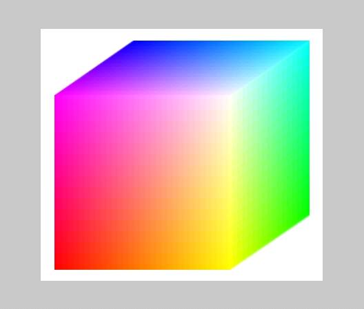
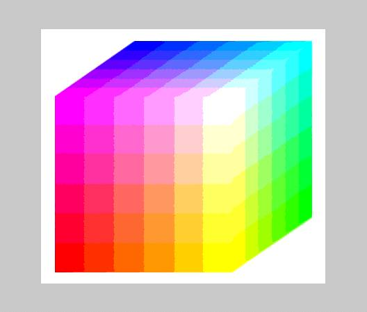

12/25/02
Goal: To implement an algorithm that converts any
RGB image into Web-Safe colors.
I implemented the algorithm in matlab. It simply maps the color of each pixel of
the image to that color's corresponding Web-Safe color. Following are the mapping values from the
gray-scale to the web-safe colors.
|
Gray-Scale Range |
0-41 |
42-84 |
85-127 |
128-171 |
172-212 |
213-255 |
|
Web-Safe Color |
0 |
51 |
102 |
153 |
204 |
255 |
To
test the code, I ran the algorithm on Fig. 1a below to produce Fig. 1b. You should be able to see how mapping RGB
space to Web-Safe color space looses most of the color information. In fact, the color cube has (2^8)^3 =
16777216 colors, while the web-safe color cube has only 6^3 = 216 colors.
Fig. 1a below and 1b below that. Note how few colors 1b has.


Get
the matlab code here.